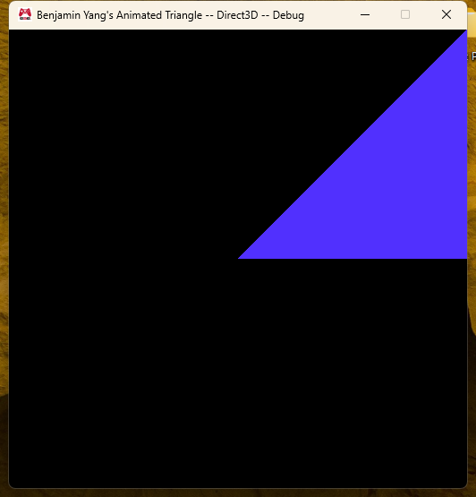
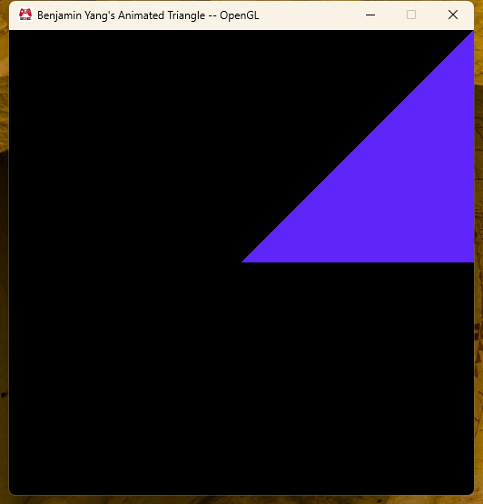
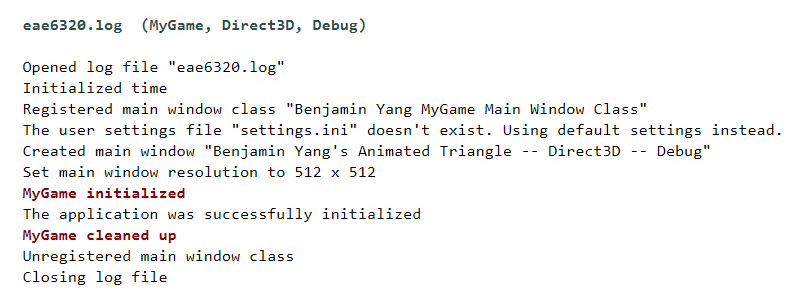
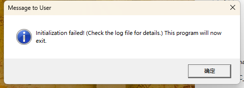

Assignment 01
Solution setup, Graphics library, MyGame and an animated triangle
MyGame.exe. ESC closes the game.
What I did
I started from the solution Tony gave us and renamed the .sln to YangBenjamin.sln so it matches my GitLab project.
For the Graphics library I made a new static library project in Engine/, turned off the precompiled header, and added the property sheets in the right order (EngineDefaults first for everything, then OpenGL for the Win32 configurations and Direct3D for x64). Then I copied in the files from the zip. The .d3d.cpp files are excluded from the Win32 builds and the .gl.cpp files are excluded from the x64 builds, and they sit in Direct3D / OpenGL / Windows filters like in the platform-specific code example.
After that I made MyGame_ next to ExampleGame_ with a MyGame project, a BuildMyGameAssets project and a Content folder, following the steps in the assignment (new GUIDs, renamed files, changed the include guards and the class name, copied the props file and changed GameName to MyGame_). I moved the MyGame entries to the top of the .sln so it is the startup project. BuildMyGameAssets depends on ShaderBuilder, UserSettings and AssetBuildExe, same as the example one.
The window is called "Benjamin Yang's Animated Triangle" followed by the platform and "Debug" when it is a debug build. I also changed the window class name and switched the icon to the EAE gamepad one.
cMyGame::Initialize() logs "MyGame initialized" and CleanUp() logs "MyGame cleaned up". I just used Logging::OutputMessage() like the engine code does.
For the shader I copied standard.shader to MyGame_/Content/Shaders/Fragment/animatedColor.shader, added it to AssetsToBuild.lua and changed the two Graphics .cpp files to load it. Each color channel is 0.5 + 0.5 * sin(g_elapsedSecondCount_simulationTime + offset) with offsets of 0, 2π/3 and 4π/3, so the triangle slowly goes around the color wheel and every channel stays between 0 and 1. The HLSL and GLSL parts do exactly the same math.
Screenshots




Which projects needed a reference to Graphics
Only Application. iApplication.cpp and iApplication.win.cpp call Graphics::Initialize(), Graphics::CleanUp(), Graphics::RenderFrame(), Graphics::SubmitElapsedTime() and the two functions for waiting on / signaling a frame, and all of those live in Graphics .cpp files. MyGame itself never calls anything from Graphics, so I did not add a reference there. It still links because it references Application and Visual Studio pulls in Application's references too.
For Graphics itself I went through the #includes in every file and ended up with Asserts, Concurrency, Logging, Math, Platform, Time, UserOutput, Windows and External/OpenGlExtensions. I originally missed OpenGlExtensions because the x64 build does not need it; the x86 link told me about it (sContext.gl.cpp calls OpenGlExtensions::Load()). Assets, Results and ScopeGuard are also included by Graphics but they only have an Empty.cpp, so there is nothing to link and no reference is needed.
A project that mentions Graphics:: but does not need a reference: ShaderBuilder. cShaderBuilder.cpp and the d3d/gl versions use Graphics::eShaderType::Vertex and Graphics::eShaderType::Fragment. That is an enum, which is completely defined in the header, so the compiler already has everything and the linker never looks for a symbol in Graphics.lib. A reference is only needed when you call a function whose body is in a .cpp of the other project. iApplication.h is a similar case, it only names the Graphics::sInitializationParameters struct; it is the .cpp files that actually make the calls.
Thoughts on the engine
The organization is a lot of small static libraries that each do one thing, plus Tools for the asset pipeline and External for third party code. Almost all of the build settings live in three property sheets, so the individual .vcxproj files are mostly just file lists and references. I like that platform code is split by file name (.win.cpp, .d3d.cpp, .gl.cpp) instead of #ifdef everywhere, and that the same engine builds two games just by changing GameName in a props file. What I like less is how much of the structure lives in Visual Studio metadata (GUIDs, filters, ExcludedFromBuild per configuration, solution level dependencies for the asset build). It is easy to get one of those slightly wrong and you only find out from a linker error or a missing data folder much later.
The code style is very consistent: c prefix for classes, s for structs, i_/o_/io_ on parameters, cResult return values instead of exceptions, and long comments that explain why, not just what. It reads almost like documentation, which is nice for a class. The downside is that files get long and some names are really long too (WaitUntilDataForANewFrameCanBeSubmitted). I probably would not write my own hobby code this way, but I can see why it helps when a lot of people work in the same code base.
Things that confused me at first:
- I could not understand why the game did not find the shaders when they were right there in
MyGame_/Content. The exe actually reads the builtdata/folder in$(GameInstallDir), which BuildMyGameAssets creates through AssetBuildExe and ShaderBuilder. Once I followed AssetsToBuild.lua → AssetBuildExe → ShaderBuilder → data/ it made sense. - I did not see where
d3d11.libandopengl32.libget linked, because the property sheets set AdditionalDependencies to nothing. It turns out every project force-includesWindows/ExternalLibraries.win.hand that file has#pragma comment(lib, ...). My Graphics project needed the same ForcedIncludeFiles setting, otherwise MyGame failed to link. - Copying ExampleGame to make MyGame: you really do need a new ProjectGuid for both projects and a new UniqueIdentifier for the Resource Files filter, otherwise Visual Studio gets confused. I also broke the .ico files once by copying them as text and got "old DIB in eaeGamePad.ico" from the resource compiler.
Expectations for the class
From the first lecture it sounds like this class is less about gameplay and more about how an engine is actually put together: build systems, platform layers, the asset pipeline, and keeping two graphics APIs behaving the same. This assignment already felt like that, most of the time went into project setup and dependencies rather than the shader.
What I want to get out of it: a real understanding of the graphics pipeline (vertex and fragment shaders, constant buffers, render state) on both D3D and OpenGL, and how the asset pipeline grows into meshes, materials and a Maya exporter later on. I am interested in tools and rendering, so I hope that by the end I can read a commercial engine's renderer and understand the decisions in it, and that setting up a Visual Studio solution stops being the scary part of a project.